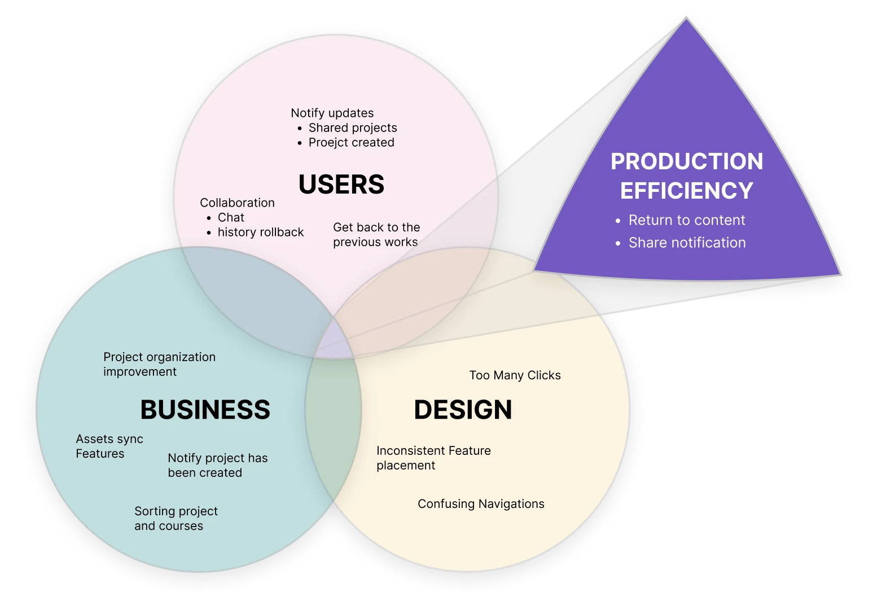
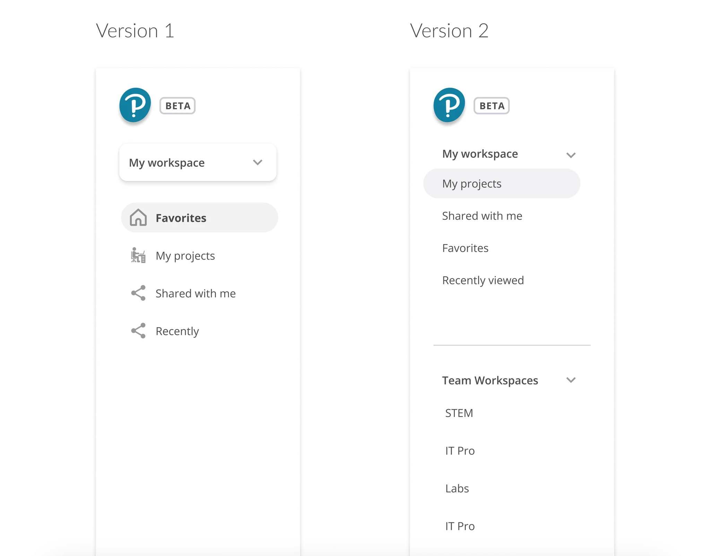
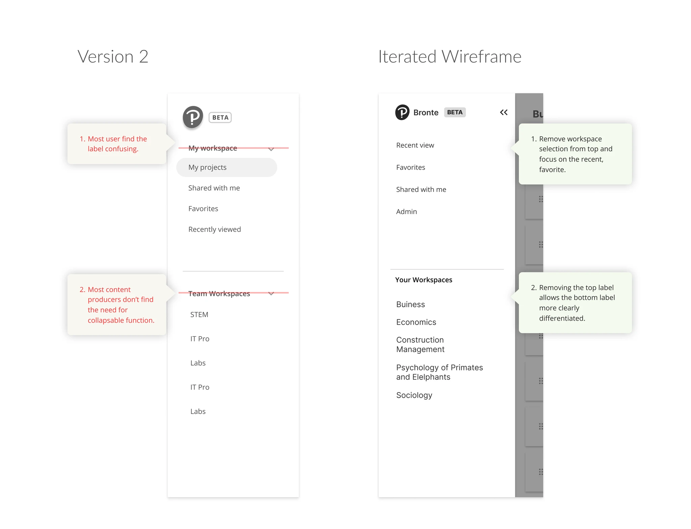
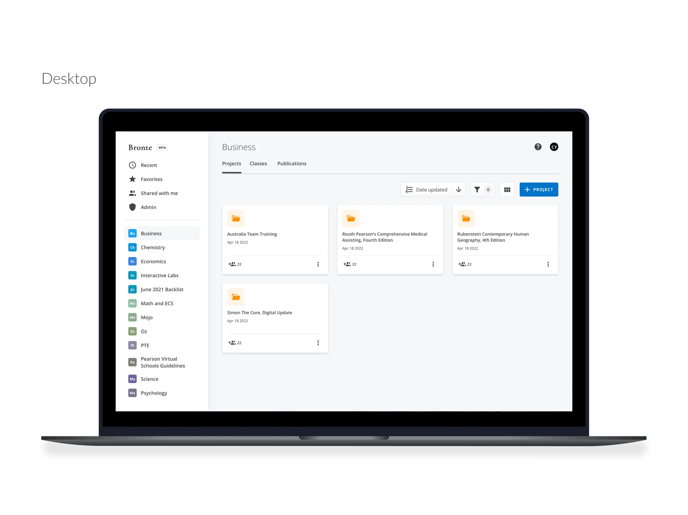
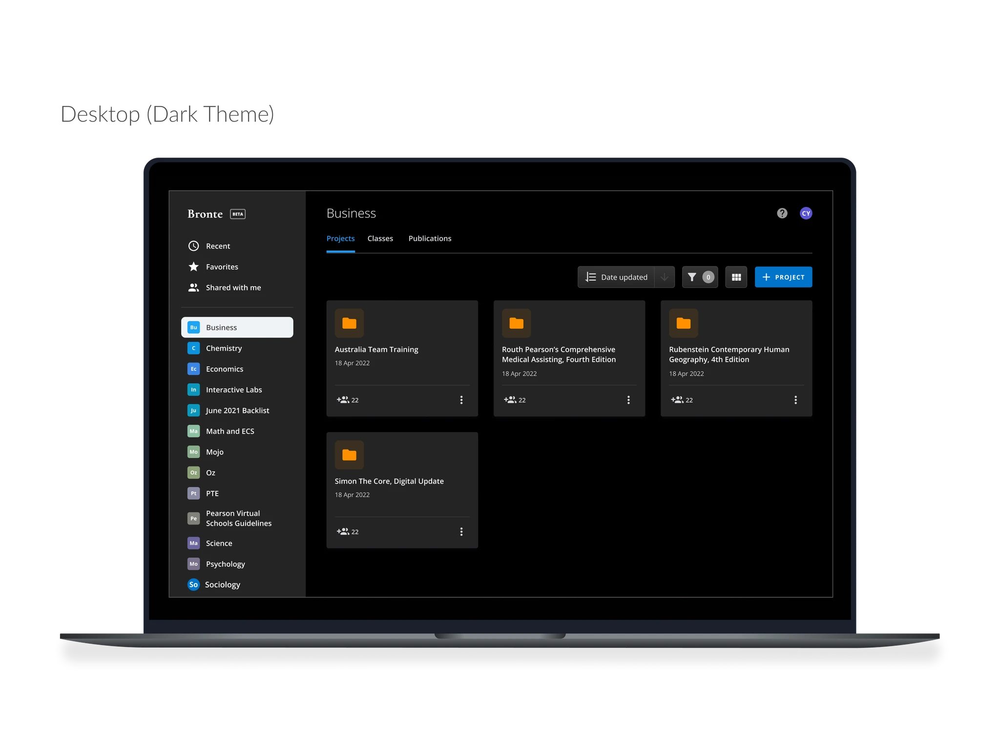
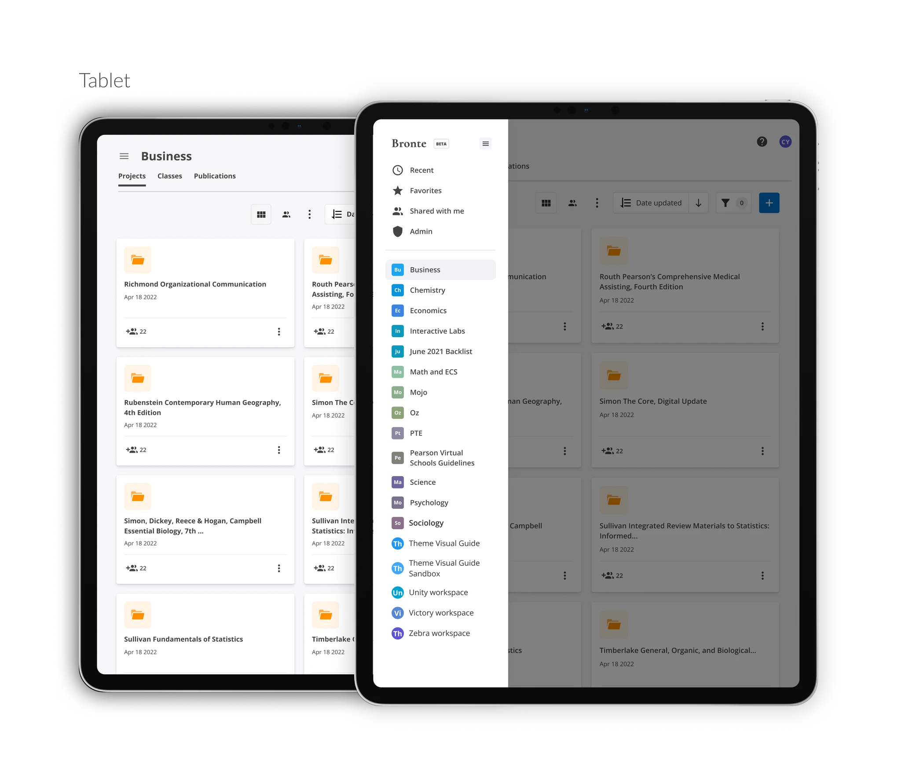
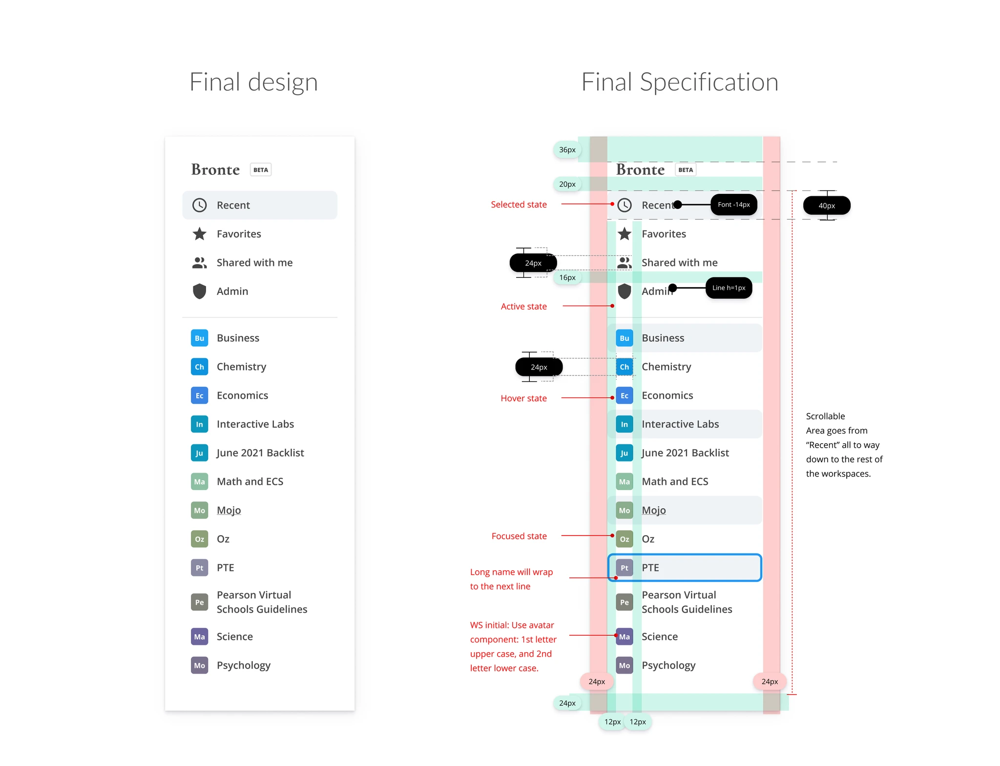
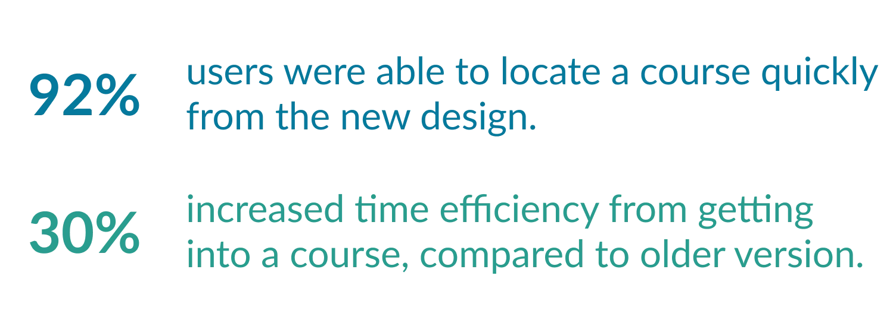

Identify The Essentials
Navigating Ambiguity

Product Overview
Bronte is a content authoring platform that helps content producers create content. Users include content author Lead, content authors, and QAs. I am responsible for improving workspace usability, which covers project organization, assets link, notification, to export.
Challenge
The multiple design requests were "patches" that eventually led to fundamental usability issues. There are many features on the platform that cluttered the interface. As a result, I initiated an audit and heuristic review of the platform.
Audit and Heuristic Review
Difficult to Navigate: Too many clicks to access courses and lessons, and it takes users too long to find relevant content.
Switch workspace was time-consuming and unclear to new users what workspace they were currently in.

Too many clicks to access courses and lessons — users took too long to find relevant content.
Process
The process involved several cycles of meetings:
- Share the audit with stakeholders and align with areas of confusion.
- Work with a learning designer and product manager to establish the correct taxonomy and information architecture.
- Create versions of improvements and align with stakeholders.
- Validate with current and new users.
- Update design, create specs, and socialize with the Dev team to create an MVP roadmap.
Seeking Alignment for Product Design Initiative
Confident that addressing the essential usability design would in turn address requests from product, I conducted a workshop to seek business, user, and design overlaps.
After finding the overlap, I advocated for the secondary and tertiary priorities, leading us to the immediate need: Product Efficiency — which would improve most users' navigation experience.

Diagraming overlaps: graphing out the commonalities among business, user, and heuristic design review produces the essential product design initiative.
2 Versions for Persona Needs
I created 2 versions based on user needs from the initial interview and requirements.
Version 1: Starts with the workspace dropdown, fulfilling users' need to determine which workspace to go to. Keeps the left side clean and emphasizes content producers' need to work on 1–2 workspaces at any given time.
Version 2: Reveals all the features and workspaces available to the user. Showing the workspaces at one glance saves extra clicks. Includes a collapsable function for the workspace so the sidebar won't be overly cluttered.

A/B Testing: 2 versions that pronounce workspace and 'recent' feature differently based on persona needs.

A/B Testing
I conducted A/B testing among 5 internal lead producers and 5 academic institutional designers (for fresh eyes and usability). There was a higher preference towards Version 2 among both current and new users.
Current Bronte users found Recent and Shared With Me helpful but felt indifferent about the expanded workspace. In Version 1, 30% of users thought the recent/favorite section only showed content within the selected workspace. In Version 2, the collapsed workspace design was not noticeable to 15% of users, and the drop-down labels confused most users.
Iterated Wireframe Based on Findings
With the test findings, Version 2's layout was more intuitive and satisfied most users. I removed the labels and collapsable feature and showed all workspaces directly.



Final Design
I socialized the design with the product owner and director. Quick-access sections created:
- The Recent section allows users to return to previously accessed content.
- The Favorites section provides content authors and QAs who oversee multiple projects a quick way to pin key work.
- Shared with me helps users stay on top of new projects delegated to them.

Results


"It's much more easier to go between each discipline and projects now."
— Sarah Peterson, Content Director"The recent feature in sidebar helped me quickly get back to my content."
— Sree Achatz, Content ProducerLet's build something meaningful.
If you're looking for a designer who values clarity and craft, I'd love to hear from you.